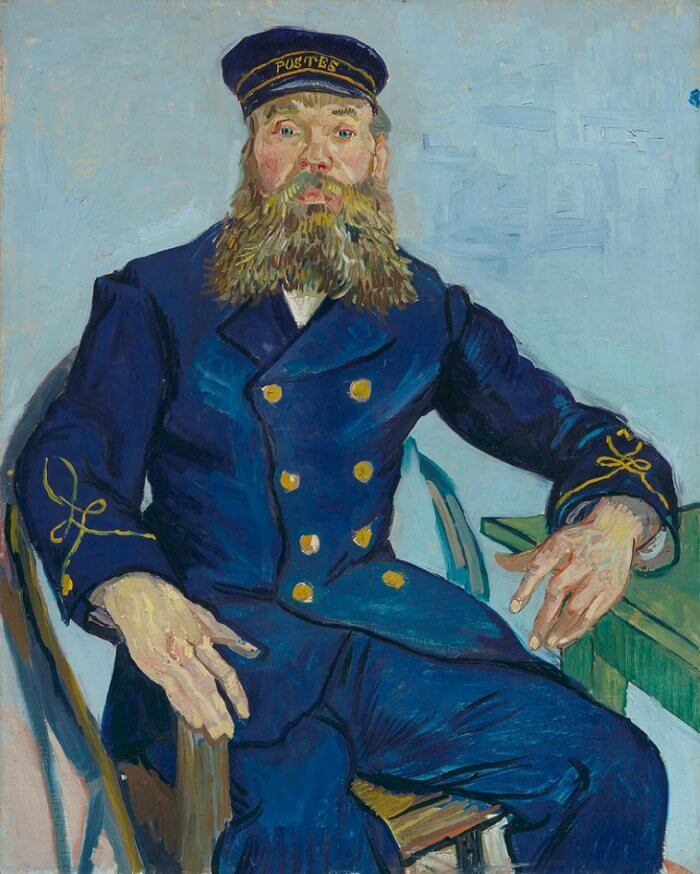

The story of Joseph Roulin Portrait
Joseph Roulin is Van Gogh's close friend when he was staying at southern French town Arles during 1888-1889. In 1888, van Gogh moved to Arles,
in hope of exploring more artistic sensation in the unspoilt countryside. But after he moved here he found himself lonely and isolated. Joseph Roulin worked as the postmaster at the station in Arles.
Van Gogh went there frequently to send paintings to his brother Theo in the Netherlands and they became close friends. The friendship with Joseph Roulin and his family offered Van Gogh comfort and companionship.
Roulin tended to van Gogh in the aftermath of psychotic episode in which Van Gogh menaced Gauguin and then sliced off a part of his own ears.
Roulin continued seeing Van Gogh when he committed to the psychiatric hospital in Arles, and writing to Van Gogh's family to reassure them of his health,
and providing constant solace to the recovering artist.
Van Gogh painted about 20 paintings for Joseph Roulin and his family, and he was very proud of these portraits and wrote to his brother Theo about them. He mentioned "the modern portrait" excited him the most. As he explained further:
"I want to paint men and women with that something of the eternal which the halo used to symbolize, and which we try to convey by the actual radiance and vibration of our coloring."

Van Gogh painted about 20 paintings for Joseph Roulin and his family, and he was very proud of these portraits and wrote to his brother Theo about them. He mentioned "the modern portrait" excited him the most. As he explained further:
"I want to paint men and women with that something of the eternal which the halo used to symbolize, and which we try to convey by the actual radiance and vibration of our coloring."
The Roulin Family
The Roulin Family is group of portrait paintings Vincent van Gogh executed in Arles in 1888 and 1889 on Joseph, his wife Augustine and their three children: Armand, Camille and Marcelle. This series is unique in many ways. Although Van Gogh loved to paint portraits, it was difficult for financial and other reasons for him to find models. So, finding an entire family that agreed to sit for paintings - in fact, for several sittings each - was a bounty. In 1989 the Museum of Modern Art in New York bought another Portrait of Joseph Roulin from a private collection in Zurich for $58 million. Accounting for inflation, this remains one of the most expensive paintings ever sold.
”I am seeking, I am striving, I am in it with all my heart.”